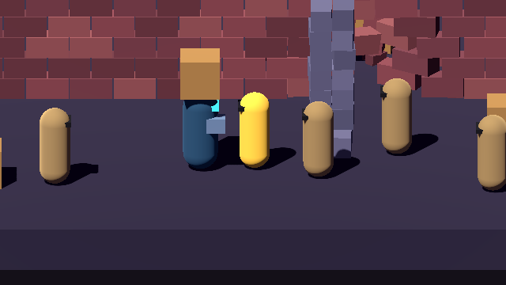
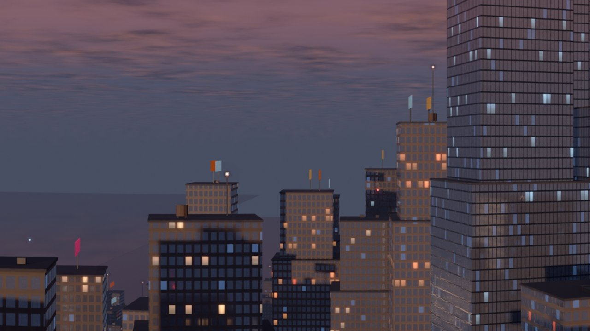
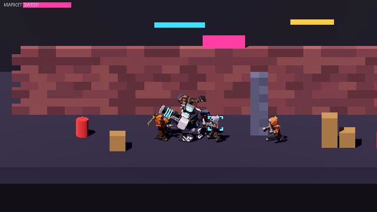
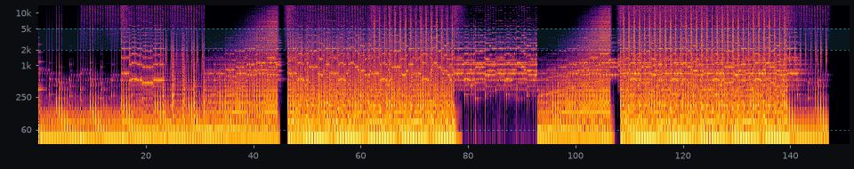
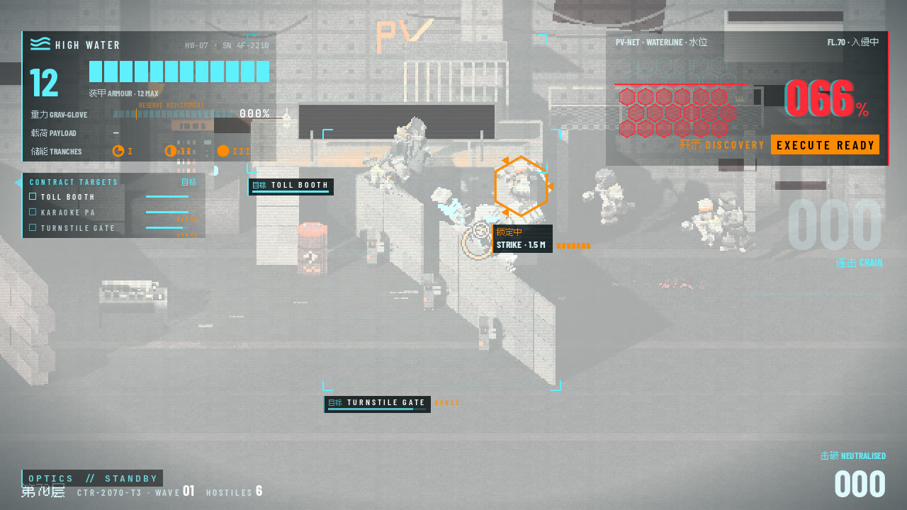
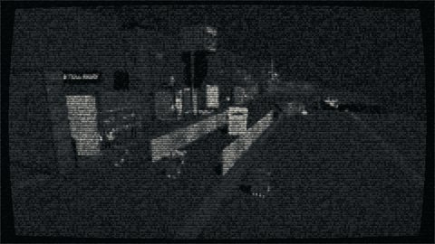
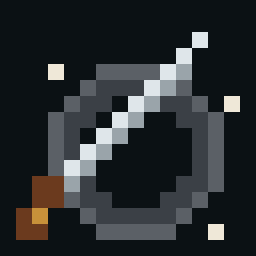

High Water
decision boards
HIGH WATER is a 3D-physics brawler Jonas Heinke built in Godot during one jam week, from 28 September to 4 October 2026, with a studio of about twenty named AI agents (Claude and Codex), each with its own lane. When a question needed his call, the agent responsible built an HTML board for it: the options side by side, real captures from the game, a recommendation, and checkboxes whose picks could be copied back to the team. Jonas answered on the board, the team built what he picked, and some boards went round again. The week produced 39 boards. These 13 are kept as they were, with local paths, internal file names and other private details removed. Each one opens with what was picked.

UI round 2: Evangelion, made by High Water
- Decision
- Which of three live HUD directions to build, all on Evangelion's screen language: GitS × Eva, Death Stranding × High Water, Blade Runner × Eva.
- Picked
- A, Section Alert (Ghost in the Shell × Evangelion). It became the game's UI.

Floor 70 finish schedule and the tower cutaway
- Decision
- The environment style (three routes rendered from the game camera), then how the Tower 3 level select should look. The first cutaway "looked SVG-drawn", so four new looks followed, and then the dollhouse was built.
- Picked
- Route A, Blockwork. For the tower select, D1, the voxel dollhouse, "with extra love and detail", plus a security camera per floor whose feed swings out on a CRT monitor.

Between missions: map, hub or turf war
- Decision
- Whether the game needs a hub, a world map or a level register between missions, scoped against a deadline five days out.
- Picked
- Option S, a level select. It became a Tower 3 cutaway with five floors, each floor a city block, and led to the art board's tower looks.

Execution menu
- Decision
- How a finisher is chosen without breaking the flow of the fight, and what each one pays.
- Picked
- Time slows almost to a stop and three rolled finishers sit on the face buttons, each with a benefit tag. The GRAB and EXECUTE prompts show only for the first three.
Depth: mash floor, skill ceiling
- Decision
- Which timing and physics additions reward skill without punishing button mashing ("i am mostly kinda button mashing which tbf is fun").
- Picked
- T0, T1, T2, T4, T5 with P2, T6, P1, P4, P5, P6 and flipbooks of all five routes. P3 left out. Directional enders: "absolutely the vision", but later.
Tower 3 blocks: site survey
- Decision
- Which identity, details and holding crew each floor gets, so the tower reads as a stack of lived-in city blocks.
- Picked
- 78 of 99 lines. F70 The Village Lobby, F71 The Labelling Farm, F72 Three-Shift School, F73 The Wet Market, F74 The Gang's Own Street.

Music board: the operator
- Decision
- Title theme, menu, pause and stage music, written as MML for a code-built FM engine, over five rounds with every take playable.
- Picked
- Title: Mirrorshades v4. Pause: Server Room v3. Stage: The Toll and Floor 70. Black ICE as the credits candidate. No jazz.
The building is the weapon
- Decision
- How far the physics simulation goes. Fourteen agents answered independently; the board sorts their ideas into three tiers of cards.
- Picked
- 16 of 18 cards; only B4 (damage invoice) and B6 (noise AI) left out. Jonas: "a great freaking stack".

Blackout, then night vision
- Decision
- How a power cut looks from the enforcer's view, and which night-vision palette keeps the tells readable.
- Picked
- The blackout ends with night vision coming online. The palette became a setting: Bone (the default, Jonas's favourite), Phosphor and Green.

Loading: the floor warms up
- Decision
- Three looks for the screen that covers the Web build's shader warm-up: Waterline, Section scan, Numeral.
- Picked
- C, Numeral, made more fluid: a wave surface, a meniscus, bubbles and a surge on each progress step.
System breached: smaller
- Decision
- The section-clear card was full-screen and far too big. Three smaller motion designs, captured from the game.
- Picked
- A, the slam strip: a band 21 % of the screen tall across the lower third, cleared in 1.8 s.

Contractor register
- Decision
- How the credits roll is staged. Every member chose their own ID card, and several pitched an idea for the roll as a whole.
- Picked
- S1–S6: a bar-mapped score, hit grammar per card, a stamp and the ring bell, the register's power failing into night vision, the roster lineup and REGISTER ISSUED.

Jonas's ID card
- Decision
- The badge and the signature artifact for Jonas's own card, drawn in code from motifs of his titles and this site.
- Picked
- Badge C, the knife ("All knives, no bagel"), and artifact 2, the Boggle tray. Readout had recommended the monk and the slot machine.